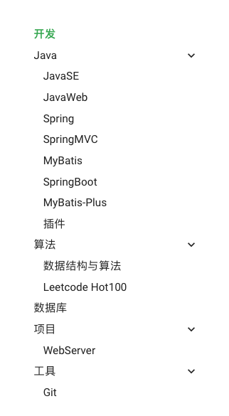
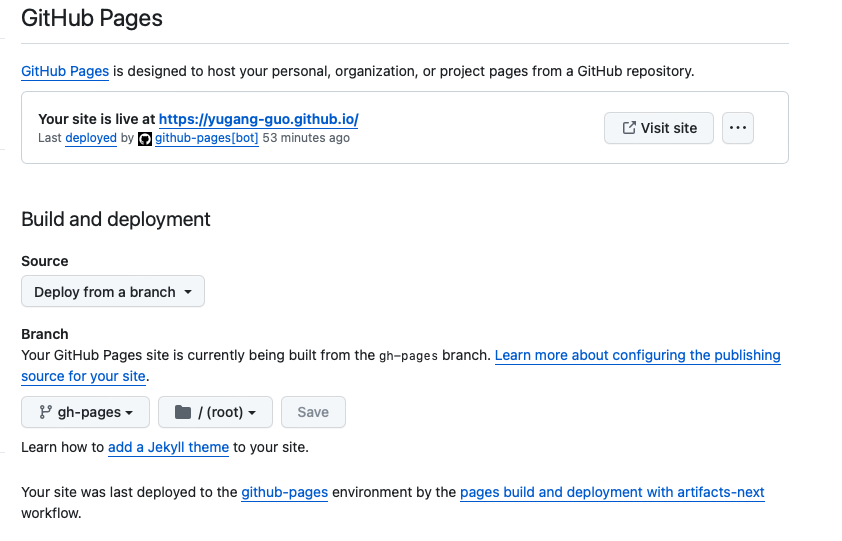

如何构建个人主页¶
简介¶
构建自己的 Github 个人主页，通过 mkdocs 将 markdown 文件自动转化为 html 文件，无需关注前端页面开发，只需专注于网页内容。
mkdocs¶
通过 python 安装 mkdocs 包
Bash
pip install mkdocs
创建你的个人主页的文件夹（应与你的 github 账户名相同）
Bash
mkdocs new personPage
文件夹结构
- docs：内容相关的文件夹，如 index.md
- mkdocs.yml：mkdocs配置文件
本地启动，点击命令行中的链接，即可实时预览网页
Bash
// 进入项目文件夹
mkdocs serve
Github¶
创建一个与 Github 账户名相同的仓库，并克隆到本地
打开项目文件夹
创建如下的文件结构
Text Only
.
├── .github
│ └── workflows
│ └── PublishMySite.yml
├── docs
│ └── index.md
└── mkdocs.yml
其中 PublishMySite.yml 内容如下
Text Only
name: publish site
on: # 在什么时候触发工作流
push: # 在从本地main分支被push到GitHub仓库时
branches:
- main
pull_request: # 在main分支合并别人提的pr时
branches:
- main
jobs: # 工作流的具体内容
deploy:
runs-on: ubuntu-latest # 创建一个新的云端虚拟机 使用最新Ubuntu系统
steps:
- uses: actions/checkout@v2 # 先checkout到main分支
- uses: actions/setup-python@v2 # 再安装Python3和相关环境
with:
python-version: 3.x
- run: pip install mkdocs-material # 使用pip包管理工具安装mkdocs-material
- run: mkdocs gh-deploy --force # 使用mkdocs-material部署gh-pages分支
个性化配置¶
使用 Material for MkDocs 来更改网页风格
本人的 MkDocs 配置信息文件 mkdocs.yml 参考
Text Only
# 网页信息部分
# [Info]
site_name: 郭玉刚的个人主页
site_url: https://yugang-guo.github.io
site_author: 郭玉刚
site_description: 郭玉刚的个人主页
# 网页上方标签栏、文档布局
# [Navigtion]
nav:
- 博客:
- Blog/index.md
- 开发:
- Dev/index.md
- Java:
- JavaSE: Dev/JavaSE.md
- JavaWeb: Dev/JavaWeb.md
- Spring: Dev/Spring.md
- SpringMVC: Dev/SpringMVC.md
- MyBatis: Dev/MyBatis.md
- SpringBoot: Dev/SpringBoot.md
- MyBatis-Plus: Dev/MyBatis-Plus.md
- 插件: Dev/plugin.md
- 算法:
- 数据结构与算法: Dev/DSA.md
- Leetcode Hot100: Dev/Hot100.md
- 数据库: Dev/MySQL.md
- 项目:
- WebServer: Dev/webserver.md
- 工具:
- Git: Dev/git.md
- 外语:
- Lang/index.md
- 生活:
- Life/index.md
# 网页UI配置
# [UI]
## [top]
theme:
name: material
# font:
# text: Roboto # 常规字体
# code: Roboto Mono #代码块字体
palette:
- scheme: default # 日间模式
primary: green # 上方的
accent: orange # 链接等可交互元件的高亮色
toggle:
icon: material/weather-night # 图标
name: 切换至夜间模式 # 鼠标悬浮提示
- scheme: slate # 夜间模式
primary: indigo
accent: orange
toggle:
icon: material/weather-sunny
name: 切换至日间模式
features:
- navigation.tabs # 使用Tab来进行分类
- navigation.top # 返回顶部的按钮 在上滑时出现
- navigation.indexes # Tab会有一个index.md 而不是在打开Tab时打开第一篇文章
- navigation.expand # 打开Tab时左侧目录全部展开
- search.suggest # 搜索输入一些字母时推荐补全整个单词
- search.highlight # 搜索出的文章关键词加入高亮
- content.code.copy # 可以通过按钮复制代码
- content.action.edit # 点击按钮跳转到编辑页面 需要结合 edit_uri 一起使用
# - toc.integrate # 右侧生产目录
language: zh # 一些提示性的文字会变成中文
icon:
repo: fontawesome/brands/github
edit_uri: edit/main/docs # 编辑按钮跳转的链接
## [top-right corner]
repo_url: https://github.com/yugang-guo/yugang-guo.github.io # 右上角点击跳转的链接
repo_name: yugang-guo.github.io # 右上角的名字
## [bottom-left corner]
copyright: 郭玉刚 CC-BY-4.0 # 左下角的版权声明
## [bottom-right corner]
extra:
social: # icons
- icon: fontawesome/brands/bilibili
link: https://space.bilibili.com/384189219
name: bilibili | Terry-gyg # 鼠标悬浮提示
- icon: fontawesome/brands/github
link: https://github.com/yugang-guo
name: GitHub | Terry
# [Extensions]
plugins:
- search: # 现在还不支持中文搜索 支持之后可以设置语言
# insider已经支持中文的分词搜索了 https://squidfunk.github.io/mkdocs-material/blog/2022/chinese-search-support/
lang:
- en
- ja
- tags # 给单篇文章添加标签 https://squidfunk.github.io/mkdocs-material/setup/setting-up-tags/?h=tags
markdown_extensions:
- pymdownx.arithmatex: # 数学公式支持
generic: true
- attr_list # 给图片后面添加{width="300"}设置大小
- toc:
permalink: true # 固定标题位置为当前位置
- pymdownx.highlight: # 代码块高亮
# linenums: true # 显示行号
# auto_title: true # 显示编程语言名称
- pymdownx.superfences # 代码块高亮插件
- meta # 支持Markdown文件上方自定义标题标签等
- admonition # https://squidfunk.github.io/mkdocs-material/reference/admonitions/#inline-blocks
- pymdownx.details # admonition需要
extra_javascript:
# 数学公式支持
# https://squidfunk.github.io/mkdocs-material/reference/math/#katex
- mkdocs/javascripts/katex.js
- https://cdnjs.cloudflare.com/ajax/libs/KaTeX/0.16.7/katex.min.js
- https://cdnjs.cloudflare.com/ajax/libs/KaTeX/0.16.7/contrib/auto-render.min.js
extra_css:
- https://cdnjs.cloudflare.com/ajax/libs/KaTeX/0.16.7/katex.min.css
- mkdocs/css/no-footer.css # 不使用底部的翻页
- mkdocs/css/unordered-list-symbols.css # multiplt unordered list symbols
配置效果图如下：

上传¶
git 上传你的个人主页项目
Github 进入个人主页仓库，配置属性
- 进入 Settings > Actions > General
- Actions permissions 选择 Allow all actions and reusable workflows
- Workflow permissions 选择 Read and write permissions
- 点击保存
- 进入 Settings > Pages
- 更改为如下的配置
- 点击保存

等待 Github 运行成功后， 即可访问你的个人主页：
Github账户名.github.io
以后增加修改内容，只需添加和修改 markdown 文件，然后提交到 Github，无需再进行配置，网页会自动进行更新